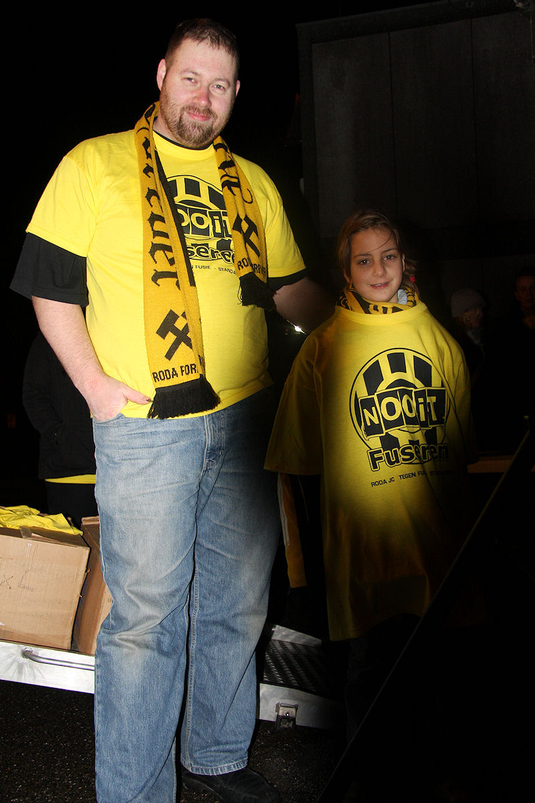
Jochen verkoopt "Nooit fuseren" shirts.
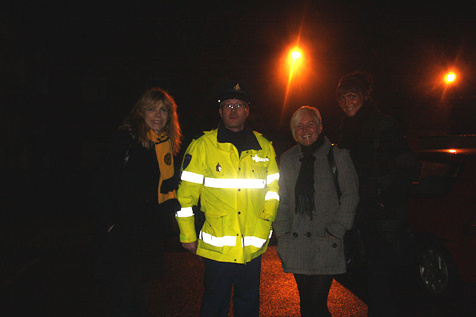
Er verzamelen zich steeds meer mensen bij het voormalige F1-hotel waaronder
enkele notabelen. Rechts van de agent staan vrouw en
dochter van oud-Roda JC speler
Huub Smeets.
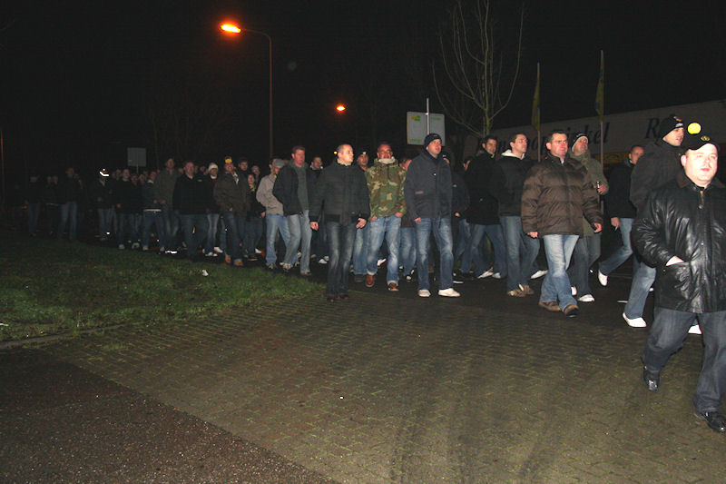
"The boys from RJC" arriveren.
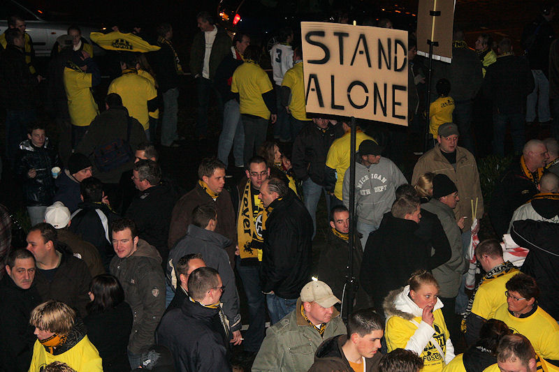
Fans uit alle geledingen van jong tot oud.
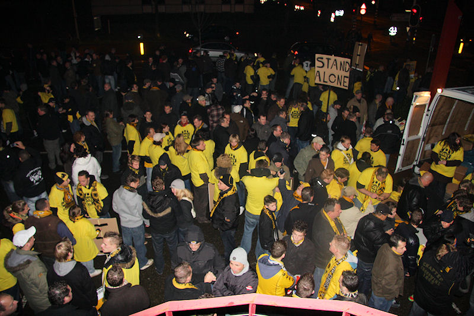
Een halfuur voor de start van de protestmars zijn er al honderden mensen
present.
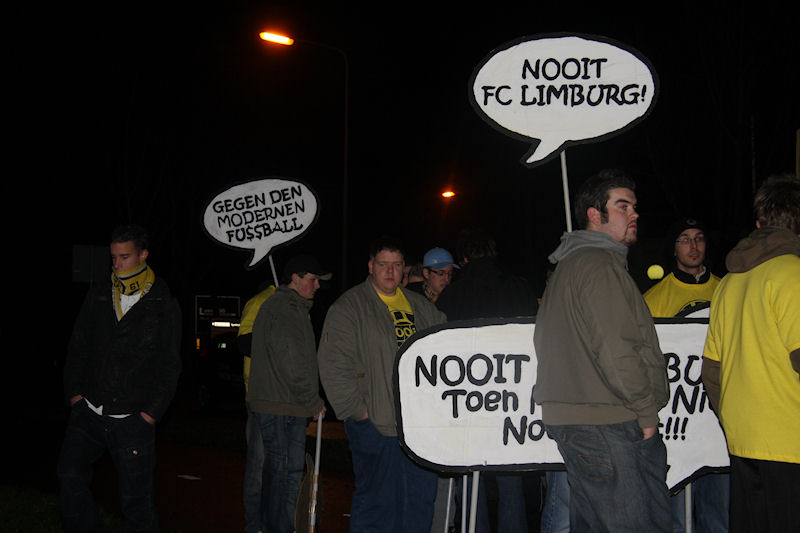
Er is ook een grote groep steunbetuigers uit Aachen.
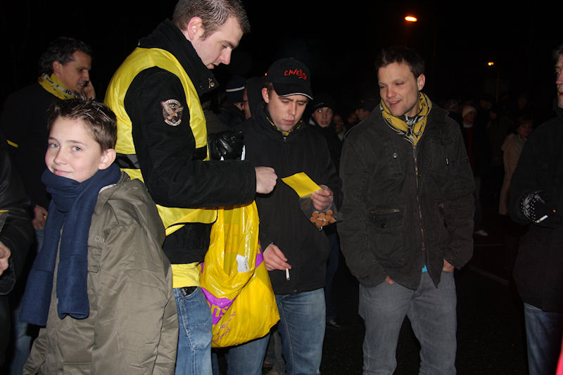
Bart deelt pepernoten uit.
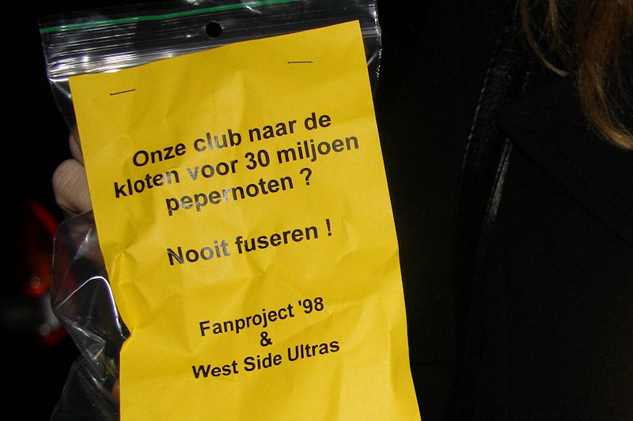
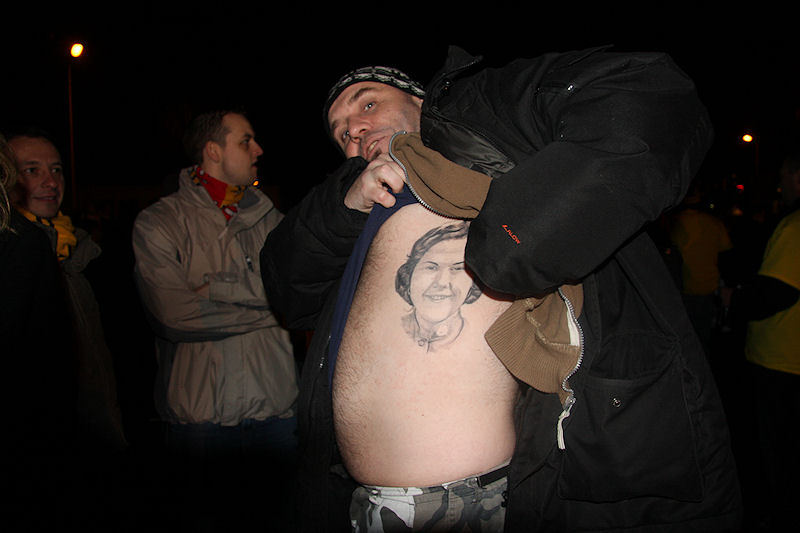
Izz showt zijn nieuwste tattoo.
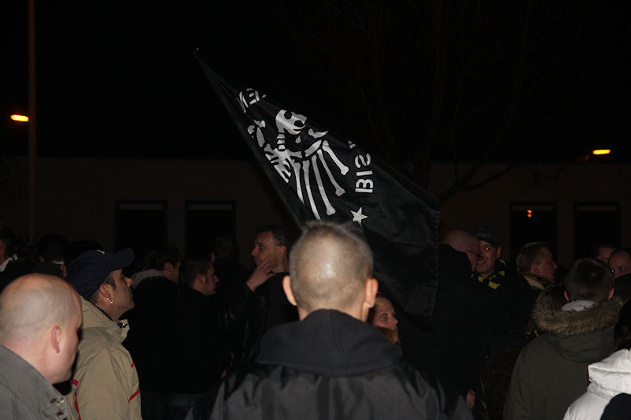
"Bis zum bitteren ende".
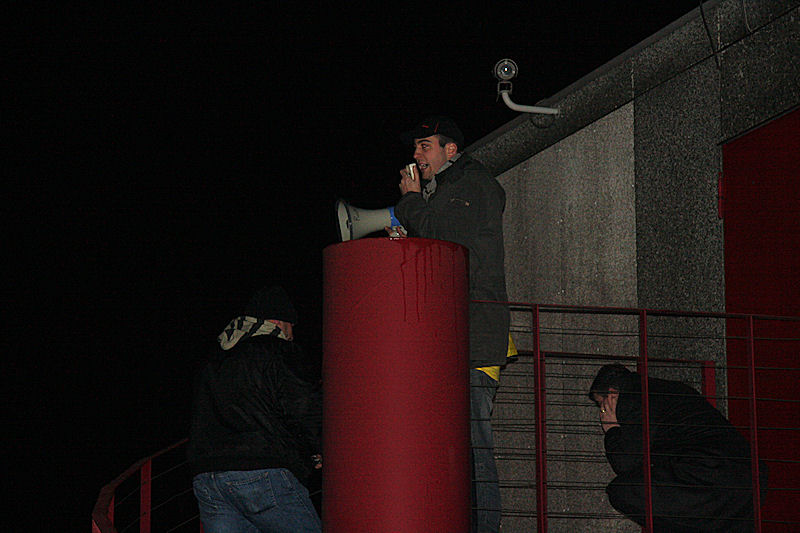
Het startsignaal wordt gegeven.
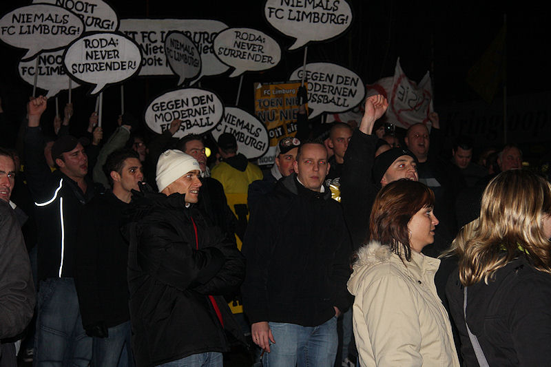
De stoet van meer dan duizend mensen zet koers naar het stadion.
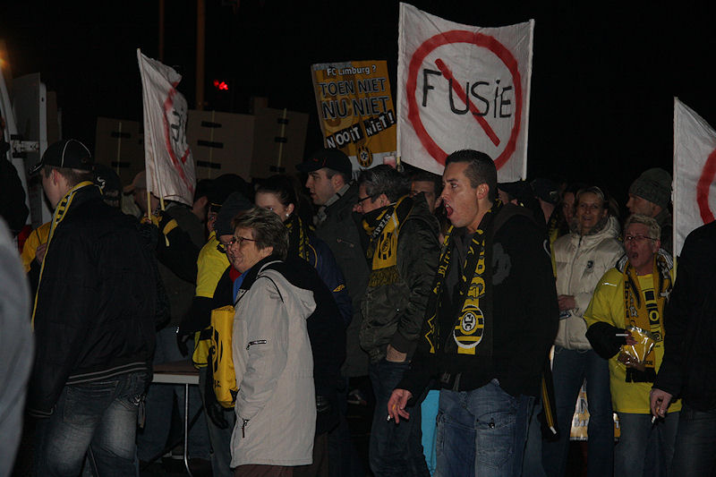
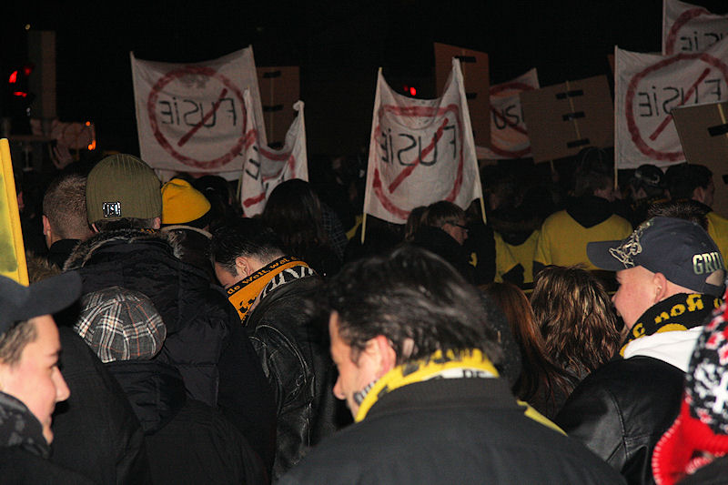
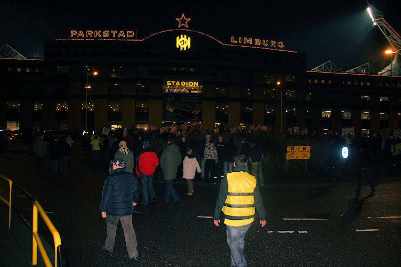
Circa 1500 man op het plein voor de hoofdingang.
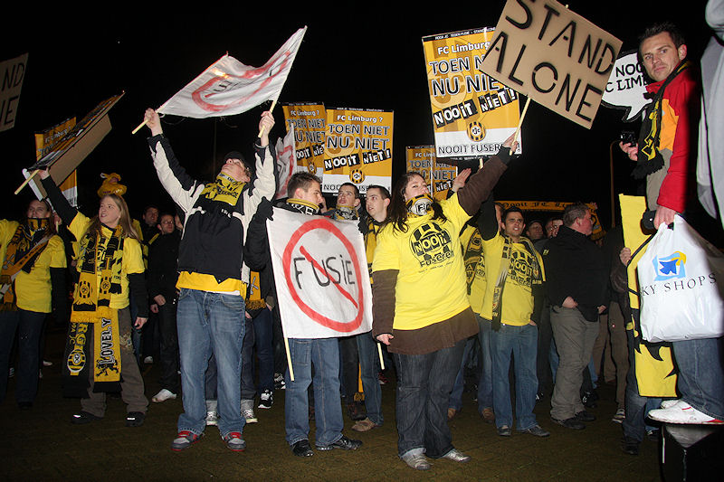
Huub Narinx spreekt de demonstranten toe en roemt het "fans maken fans"
initiatief.
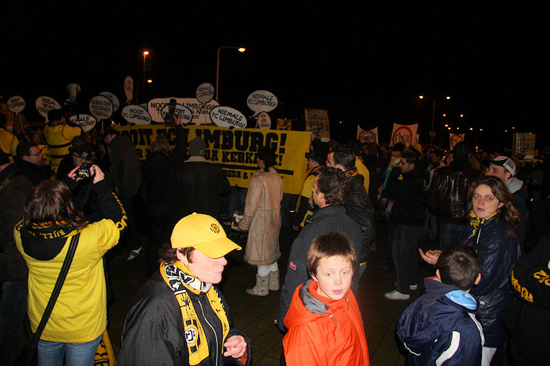
"Kuijer rot op!"
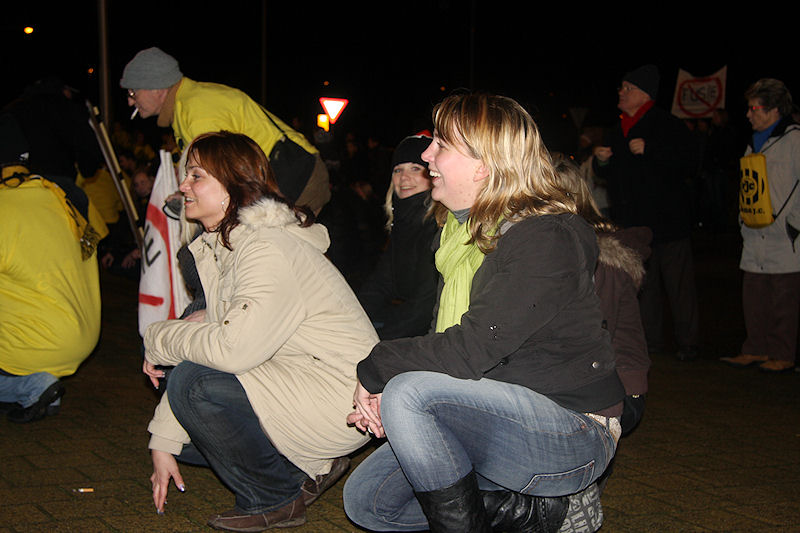
Een massaal "hinsetzen" besluit de indrukwekkende protest-mars.
Vanavond is een krachtig signaal afgegeven dat duidelijk maakt dat de
Rodasupporters niet willen fuseren met Fortuna Sittard en al helemaal
geen FC Limburg blieven.
In de uiteindelijke besluitneming is de Stichting Roda JC het belangrijkste
orgaan.
De samenwerkende supportersverenigingen FP '98 en WSU
mogen trots zijn op deze schitterend gecoördineerde actie die zonder enig
incident is verlopen. Ook de 1500 fans waaronder een grote groep van Aken
verdienen respect.